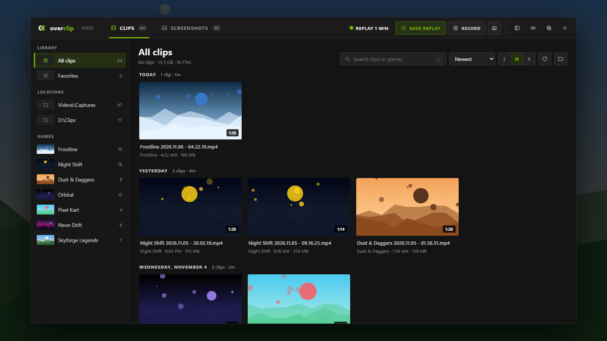
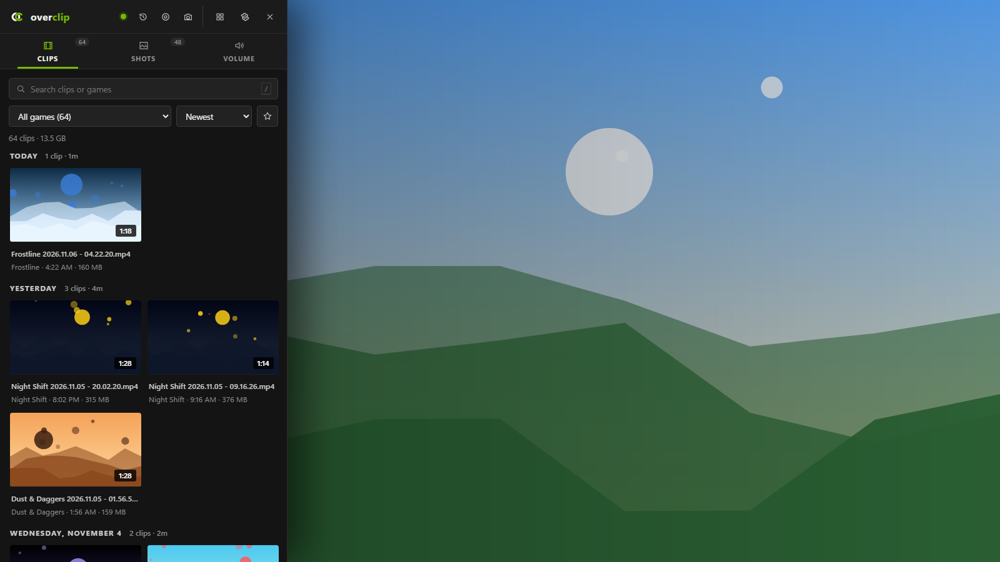
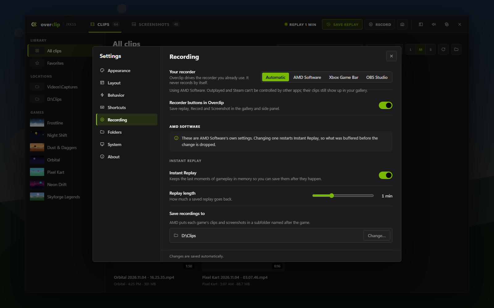
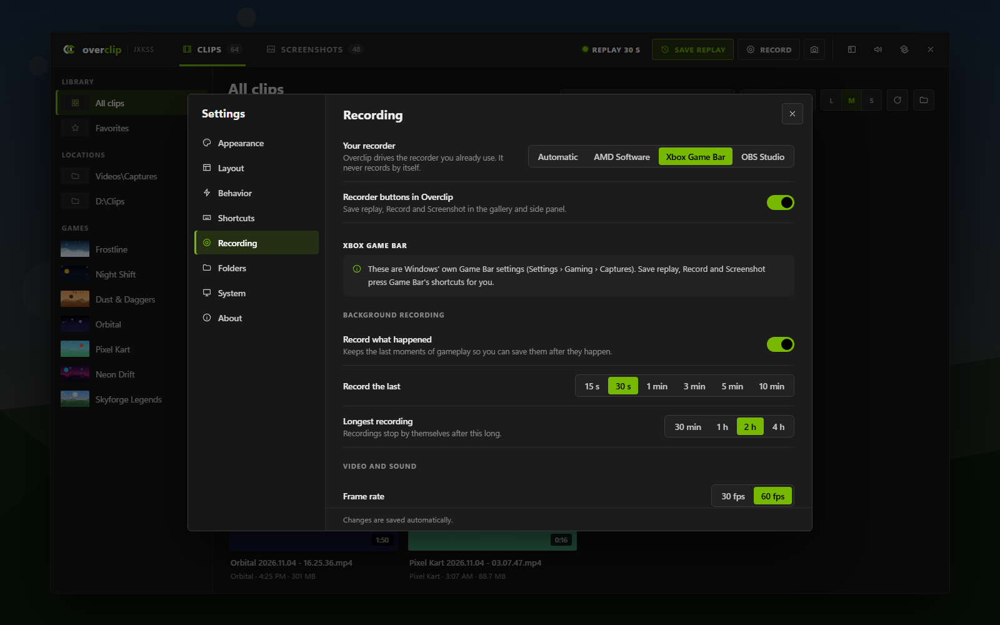
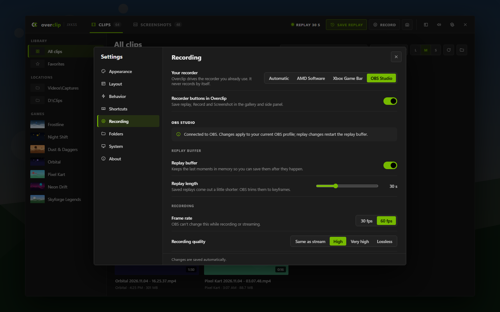
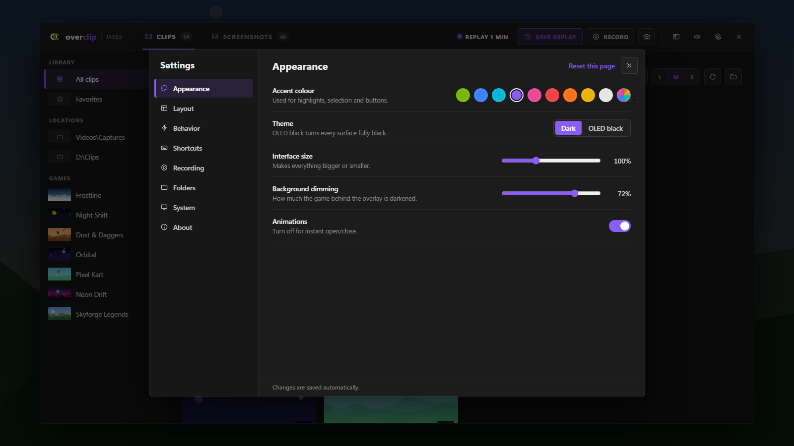
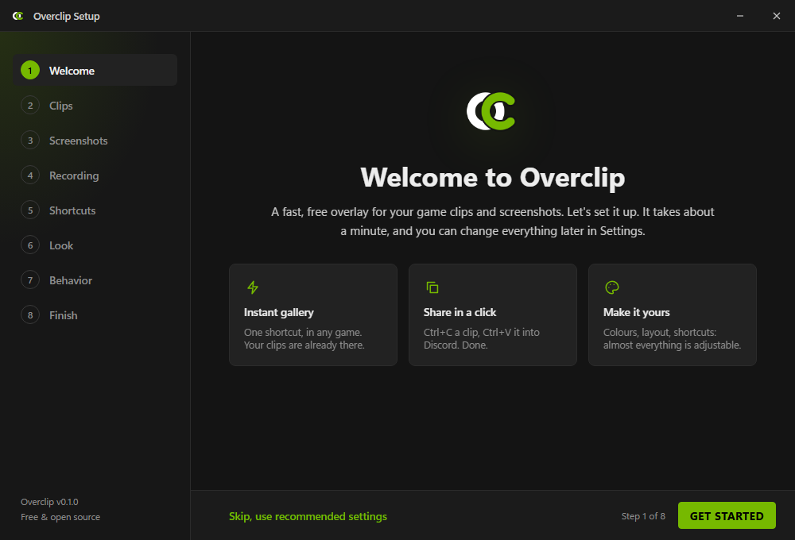

Opens instantly
A global shortcut brings up your library on top of any game. Scanning happens in the background, so it's there the moment you press the key.
Free & open source · Windows 10 & 11
Overclip is an in-game overlay that puts every clip and screenshot you've recorded one keypress away: browse, preview, share and clean up without ever alt-tabbing. It can even save replays with the recorder you already use.
No account · No ads · No tracking

Works with the recorder you already use
Overclip can also drive AMD Software, Xbox Game Bar, OBS Studio, NVIDIA App and Medal. See how
Made for people who hit "save replay" a lot and then never find the clip again.
A global shortcut brings up your library on top of any game. Scanning happens in the background, so it's there the moment you press the key.
Ctrl+C copies the actual video file. Ctrl+V it into Discord, a browser or a folder. That's it.
Clips are grouped by game and by day, with cover art from each game's latest clip. Search, favourites and sorting by length or size.
Hover a clip to see it move. Open it full-size, step through with the arrow keys, rename or favourite as you go.
Combine your recorder folders and external drives in one library. Drives stay safe to eject while Overclip runs.
Thumbnails come from Windows' own cache, heavy work runs at background priority, and nothing happens while the overlay is closed.
Side panel
Press Ctrl+P for a slim panel on the edge of your screen, with your latest clips, screenshots and a per-app volume mixer. Press the other shortcut to expand it into the full gallery.

For AMD Radeon users
Already using AMD Software's Instant Replay? Overclip becomes your clipping tool. It drives AMD's own recorder, and AMD's recording settings move into Overclip, so you never have to dig through Adrenalin again. No second recorder, no extra load on your PC.

Hit Save replay and Overclip tells you when the clip arrives, already sorted under the game it came from.
Replay length, quality, codec, sound and save folder, with notes on what each one does. Changes apply on their own.
Point AMD at a new folder or drive and Overclip offers to add it to your library, so new clips always show up.
With a surround headset or virtual surround (SteelSeries Sonar, Razer THX, and so on), AMD's "Automatic" audio setting records 7.1 sound. Windows' own player and trimmer can't decode that, so clips play silent and refuse to save after a trim. Set Audio channels to Stereo in Overclip and every new clip plays everywhere. You'll still hear surround while you play.
Needs AMD Radeon graphics with AMD Software: Adrenalin Edition installed and running (it starts with Windows by default).
Settings → Recording → Your recorder. Overclip uses whatever each app allows: full settings where it can, its own shortcuts where it can't.


Every setting applies instantly. Try a colour:

Set up in a minute

| Ctrl+Alt+P | Full gallery (from any game) |
| Ctrl+P | Side panel (from any game) |
| / or just type | Search |
| Enter · ← → | Preview and step through |
| Ctrl+C | Copy the file, ready to paste in Discord |
| Your recorder's own key | Save a replay, even with Overclip closed. By default: Ctrl+Shift+S AMD · Win+Alt+G Game Bar · Alt+F10 NVIDIA · F8 Medal |
| F · F2 · Del | Favourite · rename · Recycle Bin |
| ? | Every other shortcut |
Not by itself: it shows whatever your recorder already saves (Game Bar, ShadowPlay, ReLive, OBS, Medal…). It can also drive the recorder you use: save replays, start recordings and, for AMD Software, Xbox Game Bar and OBS, change their recording settings from the overlay. See Recording.
Rarely. AMD Software has to be installed and running, because it does the actual recording, but day to day you can stay in Overclip. You only need Adrenalin to change AMD's hotkeys or for things Overclip doesn't cover, like streaming.
They're the same settings, not a copy: Overclip changes them where AMD Software keeps them. Like in AMD Software, changing one restarts Instant Replay, so the moments buffered just before the change are dropped.
Your recorder probably saved 7.1 surround sound, which happens with surround headsets or apps like SteelSeries Sonar. Windows' own apps can't play it. With AMD Software, set Settings → Recording → Audio channels to Stereo in Overclip; new clips will play everywhere.
Yes, as far as each app allows. Xbox Game Bar and OBS Studio: settings and buttons. NVIDIA App: the buttons press its shortcuts, but its settings stay in NVIDIA App, which doesn't let other apps change them. Medal: save clip only. Outplayed and Steam can't be controlled by other apps; their clips still show up in the gallery.
Overclip talks to OBS through its built-in WebSocket server. Close OBS and press Turn on remote control in Settings → Recording, or in OBS go to Tools → WebSocket Server Settings and tick Enable WebSocket server. Overclip reads the port and password from OBS's own settings, so there's nothing to copy.
Yes: free, no ads, no account, and the full source is on GitHub under the MIT license.
Overclip never touches game processes or memory. It's a normal always-on-top window, the same approach as the Discord or Steam overlays.
Switch the game to borderless or windowed fullscreen. Games in exclusive fullscreen don't let any overlay draw on top.
While Overclip runs it owns its shortcuts everywhere. Pick a different side-panel combo in Settings → Shortcuts (for example Ctrl+Shift+P).
Never. Overclip works fully offline; nothing leaves your PC unless you paste it somewhere yourself.
Windows Settings → Apps → Installed apps → Overclip → Uninstall. Your clips are never touched.